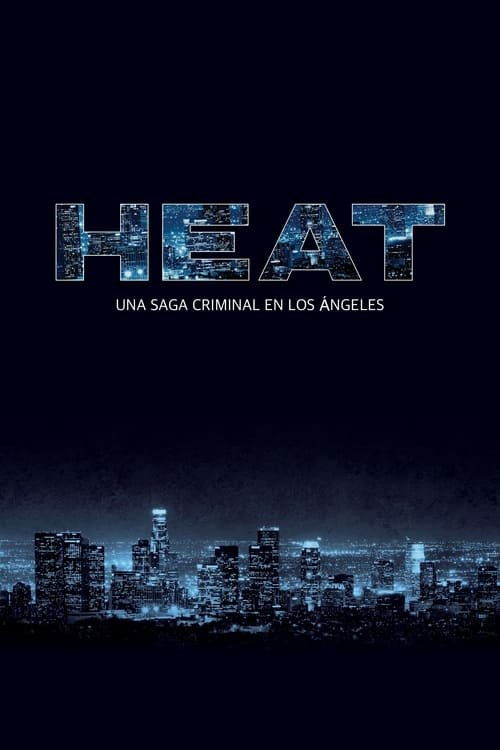

Heat (1995)
Sinopsis Rápida
Un tenso enfrentamiento entre un detective obsesionado y un carismático ladrón de bancos pone a prueba los límites de la ley y la moral en una ciudad sumida en la oscuridad.
Sinopsis Detallada
Heat sigue la implacable persecución del detective de Los Ángeles, William Hanna, a Neil McCauley, un hábil líder de una banda de ladrones. La película explora la psicología de ambos personajes, sus vidas personales y las complejidades morales de sus elecciones. Los atracos meticulosamente planeados, las intensas persecuciones y los diálogos cargados de tensión mantienen al espectador al borde del asiento. Una exploración profunda del tema del destino y la obsesión, Heat ofrece una experiencia cinematográfica inolvidable.
¿Por qué tenés que verla?
{{PUNTOS_CLAVE}}Idea Extra
Comparación de las diferentes versiones del guion de Heat y cómo evolucionaron los personajes.
{{CONTENIDO_RELACIONADO}}